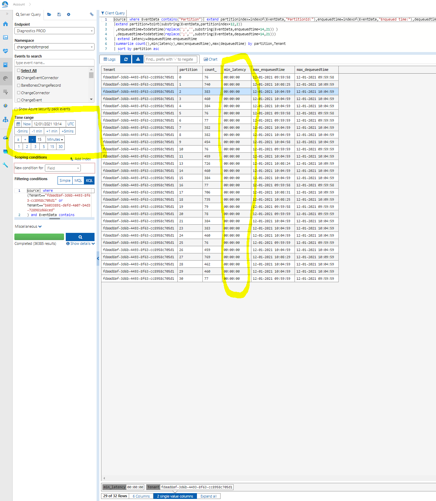
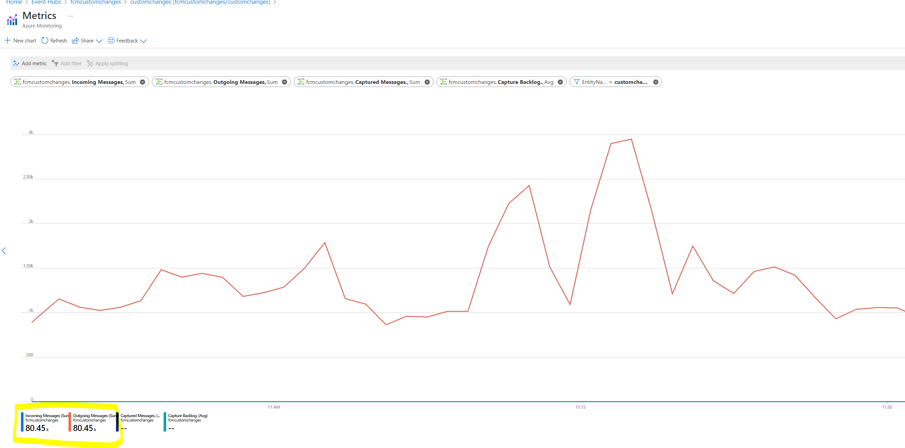

The incident occurs when there is more than 1 hr delay in event processing. The delay is measure from the time the event is ingested and the time it is being processed by the connectors.
There are 2 types of connectors which drains the incoming data
Standard deployment event conenctors – Which drains data pulled my FCM from standard deployment systems like EV2, AzDeployer, GenevaAction etc
Custom Event Connectors – This drains data being ingested to FCM by customers using our SDK.
Note : Most of the time the delay is mostly because of standard deployment data, because of the volume being high.
Step1: Measure latency
For the standard deploymet use Jarvis Query below and make sure the timelines are set properly
- StandardEvents Jarvis Url : https://portal.microsoftgeneva.com/s/8EB4065F
Note: If there's only one tenant, it will show at the bottom of the pane; you can expand to all columns by clicking on '5 of 6 columns' and including the missing column in the list.

For the custom deploymet use Jarvis Query below and make sure the timelines are set properly
Custome Events Javis Url : https://portal.microsoftgeneva.com/s/80DD558A
The query will return which partitions are being slowly processed and which tenant is processing it.
We have noticed east instances drain very slowly compared to west. Stopping the east will allows the west to process the records and catchup.Note: We need to investigate and get RCA why east is slower
Step2 : Check the eventhub if there is change in ingress of data
Check the ingress and outgress of the eventhubs if the ingress is greater than outgress then we are not draining the queue faster. This could be either issue with the connectors reading the messages from eventhub or WebAPI's latency
StandardEvents Event hub fcmstandardevents - Microsoft Azure
As shown in the below chart , the incoming and outgoing messages should overlay on each other and outgoing messages = incoming messages.

CustomEvents Event hub customchanges (fcmcustomchanges/customchanges) - Microsoft Azure
As shown in the below chart , the incoming and outgoing messages should overlay on each other and outgoing messages = incoming messages.

If there is influx of messages and the connectors are not sufficient, increase the instances of connectors.
Step3 : Check the connectors cloud services
Go to the portal for the below services and make sure they are healthy and running
Standardevent processing cloudservice -
East US - prodstandarddeploymenteventconnectoreastus - Microsoft Azure
West US - prodstandarddeploymenteventconnectorwestus - Microsoft Azure
Customevent processing cloudservice -
East US - prodcustomeventconnectoreastus - Microsoft Azure
West US - prodcustomeventconnectorwestus - Microsoft Azure
Step 4:Check the WebAPI cloud services
Go to the portal for the below services and make sure they are healthy and running
East US WebAPI:
**Check the latency of WebAPI**
Check webapi latency and any issues
https://portal.microsoftgeneva.com/s/D7CAB95B"https://portal.microsoftgeneva.com/s/D7CAB95B
The expected latency is around 300ms
If the latencies are high, check the database status
Step 5: Check Database status
Shard 0 - HYPERLINK "https://ms.portal.azure.com/#@MSAzureCloud.onmicrosoft.com/resource/subscriptions/fbc17084-a3a3-42bf-a9dc-8bc7f996a679/resourceGroups/Default-SQL-WestUS/providers/Microsoft.Sql/servers/x2altnc1cm/databases/MSChangeShard_0/overview"MSChangeShard_0 (x2altnc1cm/MSChangeShard_0) - Microsoft Azure
Shard 1 - HYPERLINK "https://ms.portal.azure.com/#@MSAzureCloud.onmicrosoft.com/resource/subscriptions/fbc17084-a3a3-42bf-a9dc-8bc7f996a679/resourceGroups/Default-SQL-WestUS/providers/Microsoft.Sql/servers/x2altnc1cm/databases/MSChangeShard_1/overview"MSChangeShard_1 (x2altnc1cm/MSChangeShard_1) - Microsoft Azure
Shard2 - HYPERLINK "https://ms.portal.azure.com/#@MSAzureCloud.onmicrosoft.com/resource/subscriptions/fbc17084-a3a3-42bf-a9dc-8bc7f996a679/resourceGroups/Default-SQL-WestUS/providers/Microsoft.Sql/servers/x2altnc1cm/databases/MSChangeShard_2/overview"MSChangeShard_2 (x2altnc1cm/MSChangeShard_2) - Microsoft Azure
Shard3-HYPERLINK "https://ms.portal.azure.com/#@MSAzureCloud.onmicrosoft.com/resource/subscriptions/fbc17084-a3a3-42bf-a9dc-8bc7f996a679/resourceGroups/Default-SQL-WestUS/providers/Microsoft.Sql/servers/x2altnc1cm/databases/MSChangeShard_3/overview"MSChangeShard_3 (x2altnc1cm/MSChangeShard_3) - Microsoft Azure
ShardMap - MSChange (x2altnc1cm/MSChange) - Microsoft Azure
Step 6: Check the Errors . If there are errors being encountered, we can use appinsights to look for any errors
Run the below query, Make sure you are using correct time lines. Go to Log Analytics and run query
Miscellaneous
The more detailed logs are also available in Jarvis
All the logs are available in Jarvis Namespace : changemdsfcmprod
and Events are
ChangeEventConnector
ChangeWebapi
QosEventPartC